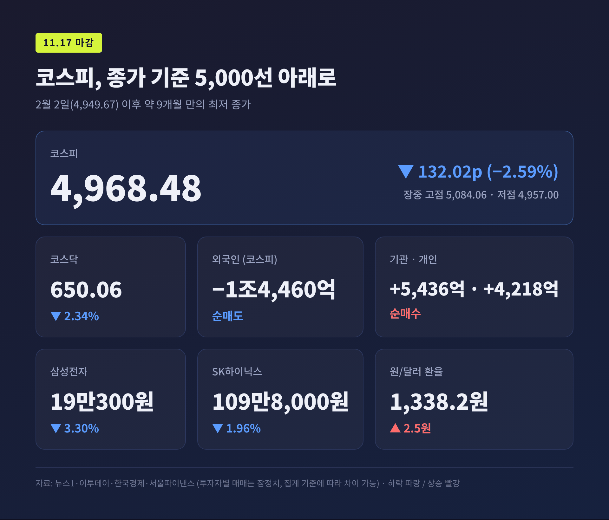
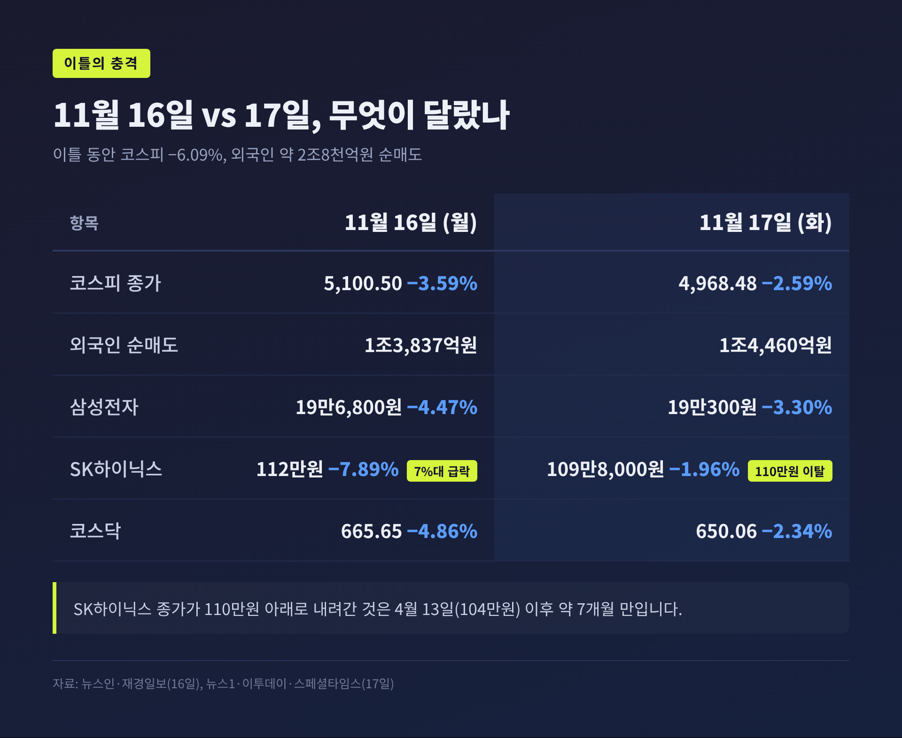
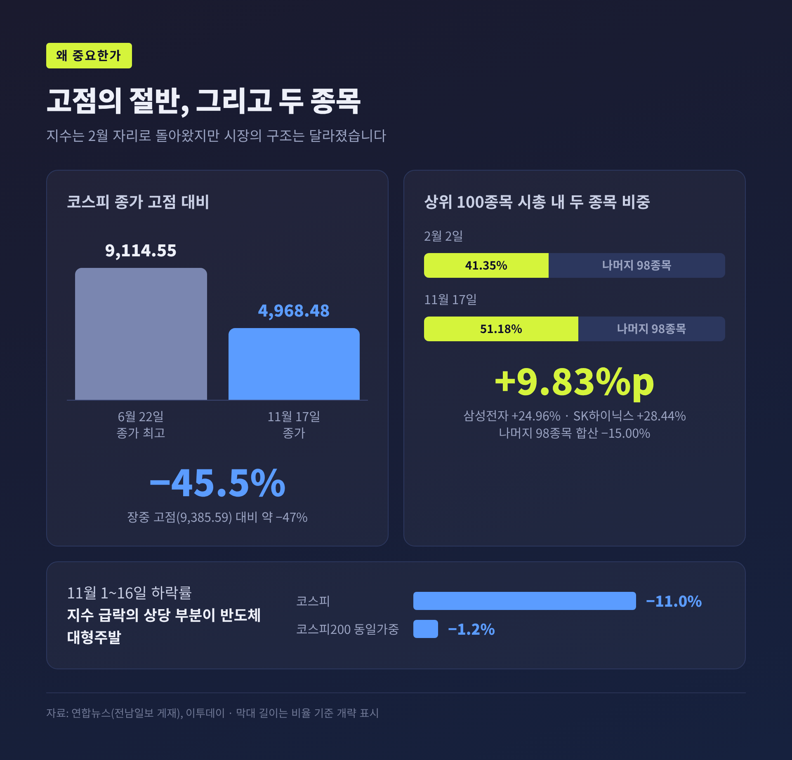
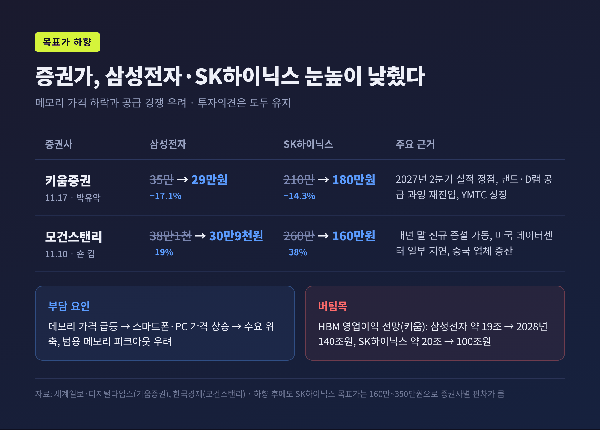
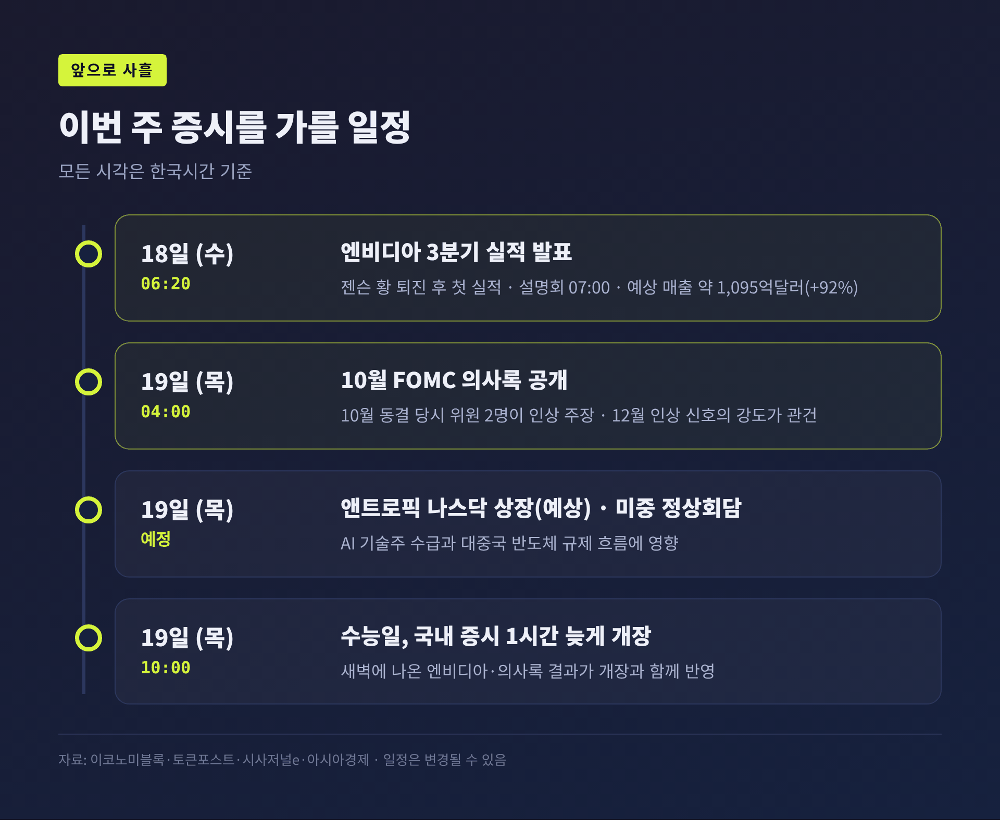

코스피 5000선 붕괴, 외국인 1.4조 매도에 9개월 만의 최저 마감
오늘은 11월 17일 코스피가 5,000선 아래로 내려앉은 배경을 정리해 보겠습니다. 숫자 자체보다 그 숫자가 만들어진 경로를 따라가 보려 합니다.
3줄 요약
- 코스피가 4,968.48(-2.59%)로 마감하며 2월 2일 이후 약 9개월 만에 종가 기준 5,000선을 내줬습니다.
- 외국인이 약 1조4,460억원을 순매도했고, 미국 반도체주 급락 여파로 삼성전자(-3.30%)와 SK하이닉스(-1.96%, 109만8,000원)가 함께 밀렸습니다.
- 다음 갈림길은 한국시간 18일 새벽 엔비디아 실적, 19일 새벽 FOMC 의사록, 19일 앤트로픽 상장입니다.

■ 11월 17일, 장 마감 숫자부터
코스피는 5,008.09로 출발했습니다. 출발부터 1.8% 넘게 빠진 자리였습니다.
오전에는 5,084.06까지 되돌렸습니다. 반등의 실마리처럼 보였습니다. 오후 들어 외국인 매도가 다시 거세졌고, 지수는 4,968.48에 멈췄습니다. 전 거래일보다 132.02포인트, 2.59% 낮은 수준입니다.
종가가 5,000을 밑돈 것은 2월 2일(4,949.67) 이후 처음입니다. 뉴스1은 192거래일 만이라고 짚었습니다. 이달 초에도 위기는 있었습니다. 11월 6일에는 장중 4,911까지 밀렸다가 5,059.69로 버텼고, 9일에도 장중 4,990선에서 되돌아왔습니다. 이번에는 종가로 선이 무너졌다는 점이 다릅니다.
매매 주체를 보면 그림이 선명해집니다.
- 외국인: 약 1조4,460억원 순매도
- 기관: 약 5,436억원 순매수
- 개인: 약 4,218억원 순매수
기관과 개인이 합쳐 1조원 가까이 받아냈지만 지수 하락을 막지 못했습니다. 집계 시점에 따라 외국인 순매도를 1조5천억원대로 전한 매체도 있습니다.
코스닥도 2.34% 내린 650.06에 마감했습니다. 코스피에서 오른 종목은 185개, 내린 종목은 709개였습니다. 시가총액 상위 10개 종목은 하나도 빠짐없이 하락했습니다.

■ 하루가 아니라 이틀에 걸친 충격
이번 하락은 17일 하루만의 일이 아닙니다. 전날인 16일이 더 거칠었습니다.
16일 코스피는 3.59% 급락해 5,100.50에 마감했습니다. 이날 외국인은 1조3,837억원을 팔았습니다. SK하이닉스는 장 초반 122만2,000원까지 올랐다가 방향을 틀어 7.89% 떨어진 112만원에 끝났습니다. 삼성전자도 4.47% 내린 19만6,800원으로 20만원선을 내줬습니다.
17일에는 낙폭이 줄었습니다. SK하이닉스는 1.96% 하락에 그쳤습니다. 다만 그 1.96%가 상징적인 선을 건드렸습니다. 종가 109만8,000원은 4월 13일 이후 약 7개월 만에 처음 보는 110만원 아래입니다. 삼성전자는 3.30% 내린 19만300원이었습니다.
흔히 "하이닉스 7% 급락, 110만원 붕괴"로 묶여 전해지지만, 7%대 급락은 16일, 110만원선 이탈은 17일의 일입니다. 이틀 동안 코스피는 6% 넘게 빠졌고, 지난주 4.56% 반등분을 모두 돌려줬습니다.

■ 왜 중요한가 — 고점의 절반, 그리고 두 종목
5,000이라는 숫자는 심리적 경계선입니다. 그런데 이번 하락이 무거운 이유는 그 선 하나보다 지나온 거리에 있습니다.
코스피의 종가 최고치는 6월 22일의 9,114.55, 장중 최고치는 6월 19일의 9,385.59였습니다. 불과 다섯 달 전입니다. 17일 종가는 종가 고점 대비 45.5%, 장중 고점 대비 약 47% 낮습니다. 같은 기간 시가총액은 7,449.6조원에서 4,076.8조원으로 줄었습니다.
월별로 보면 하락은 두 번의 큰 파도로 왔습니다. 7월에 22.19%가 빠졌고, 8~9월에는 소폭 반등했습니다. 10월 16.19%, 11월 들어 17일까지 13.3%가 다시 빠졌습니다. 연합뉴스는 10~11월 두 달 낙폭 27.3%가 2020년 초 코로나 급락기 누적 하락률 20.2%보다 크다고 전했습니다.
더 눈여겨볼 대목은 쏠림입니다. 이투데이 집계에 따르면 2월 2일과 비교해 유가증권시장 상위 100종목 시가총액에서 삼성전자와 SK하이닉스가 차지하는 비중은 41.35%에서 51.18%로 커졌습니다. 같은 기간 나머지 98종목의 합산 시가총액은 15% 줄었습니다.
지수는 9개월 전 자리로 돌아왔지만, 속은 전혀 다릅니다. 2월에는 여러 업종이 지수를 나눠 들고 있었습니다. 지금은 두 반도체 종목이 시장의 절반을 짊어지고 있습니다. 11월 1일부터 16일까지 코스피가 11.0% 하락하는 동안 코스피200 동일가중지수는 1.2% 하락에 그쳤습니다. 지수 급락의 상당 부분이 반도체 대형주에서 나왔다는 뜻입니다.

■ 무엇이 시장을 흔들었나
직접적인 방아쇠는 전날 밤 뉴욕이었습니다. 현지 16일 나스닥은 2.49%, 필라델피아 반도체지수는 5.28% 떨어졌습니다. 엔비디아가 4.12%, 마이크론이 7%대, AMD가 5.58% 내렸습니다. 미국에 상장된 SK하이닉스 ADR도 7.29% 하락했습니다.
그 배경에는 몇 갈래의 불안이 겹쳐 있습니다.
- 엔비디아의 리더십 공백. 젠슨 황 CEO가 물러나고 콜렛 크레스 CFO가 임시 CEO를 맡았습니다. 퇴진 경위는 매체마다 "사임"과 "해임"으로 표현이 엇갈리고, 정확한 경위는 아직 공개적으로 정리되지 않았습니다. 한지영 키움증권 연구원은 이를 두고 엔비디아가 주도해 온 AI 투자와 "순환 금융 생태계"가 위축될 수 있다는 우려로 번지고 있다고 분석했습니다.
- 미국의 AI 반도체 규제 강화. 미 상무부 산업안보국(BIS)은 현지 16일 새 잠정 규정을 내놨습니다. 해외 데이터센터가 중국 등 고위험국 기업에 대규모 연산 능력을 원격으로 빌려주려면 허가가 필요해졌습니다. 인도네시아·말레이시아·싱가포르·태국과 브라질 본사 기업에 첨단 AI 칩을 수출할 때도 사전 허가를 받아야 합니다. 중국 기업이 TSMC나 삼성전자에 첨단 칩 생산을 맡길 때 미국 허가를 받도록 하는 파운드리 규제도 되살아났습니다.
- AI 수요 전망 하향과 금리 부담. 반도체 조사기관 세미애널리시스가 AI 컴퓨팅 수요와 설비투자 전망을 낮췄습니다. 미국 10년물 국채금리는 5%를 웃돌고, 연준 안에서는 12월 금리 인상 가능성까지 거론됩니다. 신한투자증권은 이를 엔비디아, 미중 갈등, AI 수요 경고가 겹친 "삼중고"로 요약했습니다.
- 앤트로픽 상장을 앞둔 수급. 19일 나스닥 상장이 예상되는 앤트로픽에 투자할 자금을 마련하려고 기존 AI·기술주를 팔 수 있다는 관측도 수급 부담으로 꼽혔습니다.
하락은 반도체에서 끝나지 않았습니다. 전기유틸리티(-5.71%), 전기장비(-4.63%) 같은 AI 인프라 업종이 더 크게 밀렸고, 은행·보험·조선·방산도 약세로 돌아섰습니다. AI라는 한 줄기 기대에 기대어 오른 업종들이 함께 흔들린 셈입니다.
■ 메모리 가격 우려와 목표가 하향
주가를 끌어내린 또 하나의 축은 메모리 업황입니다.
키움증권 박유악 연구원은 17일 삼성전자 목표주가를 35만원에서 29만원으로, SK하이닉스를 210만원에서 180만원으로 낮췄습니다. 투자의견은 '매수'를 유지했습니다. 논리는 이렇습니다. 메모리 가격이 크게 오르면서 스마트폰과 PC 가격이 비싸졌고, 그만큼 수요가 줄어드는 국면에 들어선다는 것입니다. 낸드는 내년 상반기, D램은 내년 하반기에 다시 공급 과잉에 들어설 것으로 봤습니다. 분기 실적의 정점은 내년 2분기로 제시했습니다. 박 연구원은 내년 초 중국 양쯔메모리(YMTC)의 상장 국면에서 메모리 업종 주가 조정이 예상된다고 했습니다.
이보다 앞선 10일에는 모건스탠리의 숀 킴 애널리스트가 SK하이닉스 목표가를 260만원에서 160만원으로 38% 낮췄습니다. 삼성전자는 38만1,000원에서 30만9,000원으로 내렸습니다. 내년 말 신규 증설 가동, 미국 데이터센터 일부의 지연, 중국 업체의 증산을 근거로 들었습니다.
한쪽 면만 있는 것은 아닙니다. 키움증권은 HBM 영업이익이 삼성전자는 올해 약 19조원에서 2028년 140조원, SK하이닉스는 약 20조원에서 100조원으로 커질 것으로 봤습니다. 연말과 내년 초 조정을 거친 뒤 내년 봄 반등을 예상했습니다. 모건스탠리도 단기 실적 전망은 오히려 올렸습니다.
증권사 사이의 시각 차이도 큽니다. 하향 후에도 SK하이닉스 목표가는 160만원(모건스탠리)부터 350만원(KB증권)까지 벌어져 있습니다. 시장이 미래 이익을 얼마나 믿어야 할지 합의를 이루지 못하고 있다는 신호로 읽힙니다.

■ 환율은 왜 크게 흔들리지 않았나
외국인이 이틀 동안 2조8천억원 넘게 팔았는데도 원/달러 환율은 17일 1,338.2원으로 2.5원 오르는 데 그쳤습니다. 보통은 외국인 주식 매도가 달러 수요를 키워 원화를 약하게 만듭니다. 이번에는 그 공식이 잘 들어맞지 않았습니다.
머니투데이는 그 이유로 반도체 수출기업의 달러 매도를 꼽았습니다. 수출로 번 달러를 원화로 바꾸는 물량이 외국인 자금 유출을 상쇄했다는 설명입니다. 연말을 앞두고 외국계 금융사의 거래가 줄어든 점, 엔화 강세에 원화가 동조한 점도 함께 거론됐습니다.
그렇다고 안심할 상황은 아닙니다. 한국은행 집계로 10월 한 달 외국인 주식 자금은 약 193억달러가 빠져나갔고, 연합뉴스는 외국인이 7개월 연속, 누적 약 166조원을 순매도했다고 전했습니다. 국내 투자자의 미국 주식 매수도 달러 수요를 떠받칩니다. 환율이 버티고 있는 것은 수출 대금이라는 완충재 덕분이지, 자금 유출이 멈췄기 때문은 아닙니다.
■ 앞으로 사흘, 무엇을 봐야 하나
시장의 시선은 이번 주 세 개의 일정에 모여 있습니다. 시각은 모두 한국시간 기준입니다.
- 18일(수) 오전 6시 20분경 — 엔비디아 3분기 실적. 젠슨 황 퇴진 이후 첫 발표입니다. 시장 예상 매출은 약 1,095억달러로 1년 전보다 92% 많은 수준입니다. 숫자만큼 임시 경영진이 내놓을 설명이 중요합니다. 유안타증권 이재원 연구원은 고객 계약과 제품 일정에 대한 새 경영진의 설명을 핵심 변수로 꼽았습니다.
- 19일(목) 오전 4시 — 10월 FOMC 의사록. 10월 회의에서 연준은 금리를 동결했지만 위원 두 명이 인상을 주장했습니다. 12월 인상 신호가 얼마나 짙은지가 관건입니다.
- 19일(목) — 앤트로픽 나스닥 상장(예상)과 미중 정상회담. 같은 날은 수능일이라 국내 증시가 오전 10시에 1시간 늦게 열립니다.

엔비디아 실적이 기대를 웃돌고 경영 공백에 대한 설명이 설득력을 얻는다면 반도체주가 숨을 돌릴 여지가 있습니다. 반대로 가이던스가 흔들리거나 의사록이 매파적으로 읽힌다면 5,000선 회복은 더 멀어질 수 있습니다.
개인투자자의 움직임도 함께 살펴볼 만합니다. 16~17일 이틀 동안 개인은 KODEX 코스닥150레버리지를 1,663억원, KODEX 레버리지를 1,046억원어치 사들였습니다. 레버리지 상품은 손익이 함께 커지고, 하루 단위 복리 구조 탓에 기간이 길어질수록 기초지수와 성과가 어긋날 수 있다는 점은 기억해 둘 필요가 있습니다. 한지영 연구원도 변동성을 고려하면 분할 매수가 현실적이라고 했습니다.
정리하면 이렇습니다.
예전에는 반도체 두 종목이 지수를 끌어올리는 엔진이었습니다. 지금은 같은 두 종목이 지수를 끌어내리는 무게가 됐습니다. 5,000선 붕괴는 원인이라기보다 결과에 가깝습니다. AI 투자에 대한 믿음, 엔비디아라는 중심축, 메모리 가격의 방향이 동시에 흔들린 결과입니다.
"지수는 제자리로 돌아왔지만, 시장의 구조는 9개월 전과 다르다."
이번 주 새벽에 나올 숫자들이 그 구조를 다시 바꿀 수 있을지, 차분히 지켜봐도 늦지 않을 것입니다.
본 글은 정보 제공 목적으로 작성되었으며 특정 종목에 대한 투자 권유가 아닙니다. 투자 판단과 그 결과에 대한 책임은 투자자 본인에게 있습니다. 수치는 각 매체 보도(잠정치 포함)를 기준으로 하며 집계 기관·시점에 따라 다를 수 있습니다.
참고 자료
- 파이낸셜뉴스(뉴스1), 「코스피 9개월 만에 최저…외국인 1.4조 '팔자' 5000선 붕괴」, 2026-11-17 — https://www.fnnews.com/news/202611171610460668
- 이투데이, 「코스피, 4거래일 연속 하락에 5000선 붕괴…9개월 만에 최저」, 2026-11-17 — https://www.etoday.co.kr/news/view/2649349
- 한국경제, 「코스피 2.59% 하락해 5000선 붕괴…반도체 이어 금융·조선주도 약세」, 2026-11-17 — https://www.hankyung.com/article/202611172322i
- 시사저널e, 「[e마켓클로징] 코스피 9개월 만에 5000선 붕괴···외국인 매도 공세」, 2026-11-17 — https://www.sisajournal-e.com/news/articleView.html?idxno=425108
- 스페셜타임스, 「반도체주 급락, SK하이닉스 7개월 만에 110만원선 붕괴」, 2026-11-17 — https://www.specialtimes.co.kr/news/articleView.html?idxno=486633
- 글로벌경제신문, 「'젠슨황 리스크' 지속에 반도체주 급락... 하이닉스, 7개월 만에 110만원대 붕괴」, 2026-11-17 — https://www.getnews.co.kr/news/articleView.html?idxno=887505
- 이투데이, 「다시 4900선…더 짙어진 '삼전·하이닉스 쏠림'」, 2026-11-17 — https://etoday.co.kr/news/view/2649380
- 세계일보, 「'메모리 가격 하락·공급 경쟁 심화'…증권가 '삼전닉스' 목표가 하향세」, 2026-11-17 — https://www.segye.com/newsView/20261117508205
- 디지털타임스, 「키움證, 삼전·닉스 목표가 동반 하향…'내년 2분기 피크아웃'」, 2026-11-17 — https://www.dt.co.kr/article/12095589
- 한국경제, 「반도체 저승사자 또 경고…삼전닉스 목표가 대폭 낮췄다」, 2026-11-10 — https://www.hankyung.com/article/2026111080887
- 뉴스인, 「코스피 3.59% 급락, 외국인 1조3837억원 매도」, 2026-11-16 — http://www.newsin.co.kr/news/articleView.html?idxno=135007
- 재경일보, 「삼성전자 20만원선 다시 내줬다…하이닉스 7.89% 급락」, 2026-11-16 — https://news.jkn.co.kr/post/1098988
- 재경일보, 「코스피 5천선 무너졌는데…개미는 레버리지 ETF로 몰렸다」, 2026-11-17 — https://news.jkn.co.kr/post/1101948
- 서울파이낸스, 「원·달러 환율 1338.2원 마감···2.5원↑」, 2026-11-17 — https://www.seoulfn.com/news/articleView.html?idxno=643099
- 머니투데이, 「코스피 하락·달러 강세에도…원/달러 환율 하락하는 이유」, 2026-11-16 — https://www.mt.co.kr/economy/2026/11/16/2026111616221711960
- 데일리안, 「지난달 외국인 주식 193억 달러 순유출」, 2026-11-12 — https://www.dailian.co.kr/news/view/1714120/
- 한국일보, 「美, 대중국 AI 반도체 수출 규제 이어 '데이터센터 원격 접속'도 차단」, 2026-11-17 — https://www.hankookilbo.com/news/article/A2026111709580000396
- 아시아경제, 「젠슨황 없는 엔비디아, 3분기 실적발표…매출은 92% 증가 전망」, 2026-11-17 — https://view.asiae.co.kr/article/2026111715484269290
- 지디넷코리아, 「젠슨 황 없는 엔비디아, 첫 실적 발표서 답해야 할 질문」, 2026-11-17 — https://zdnet.co.kr/view/?no=20261117170059
- 이코노미블록, 「주간경제일정, 엔비디아 실적·앤트로픽 상장·FOMC 의사록 등」, 2026-11-16 — https://economybloc.com/article/123508/
- 글로벌이코노믹, 「美 연준 의사록 18일 공개…12월 인상폭 촉각」, 2026-11-16 — https://www.g-enews.com/article/Global-Biz/2026/11/2026111522131576539a1f309431_1
- 전남일보(연합), 「9000선 넘었던 코스피, 5개월 만에 4968로 추락…45% 넘게 빠졌다」, 2026-11-17 — https://www.jnilbo.com/news/articleView.html?idxno=90000083768
- 한국경제, 「다 내 잘못…고점 대비 47% 폭락에 개미들 눈물」, 2026-11-17 — https://www.hankyung.com/article/2026111728897